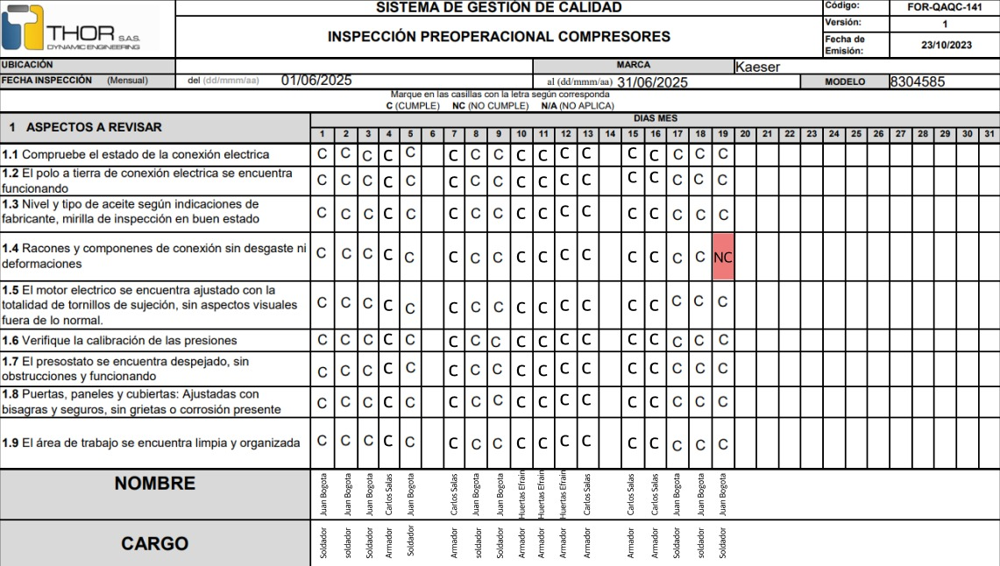
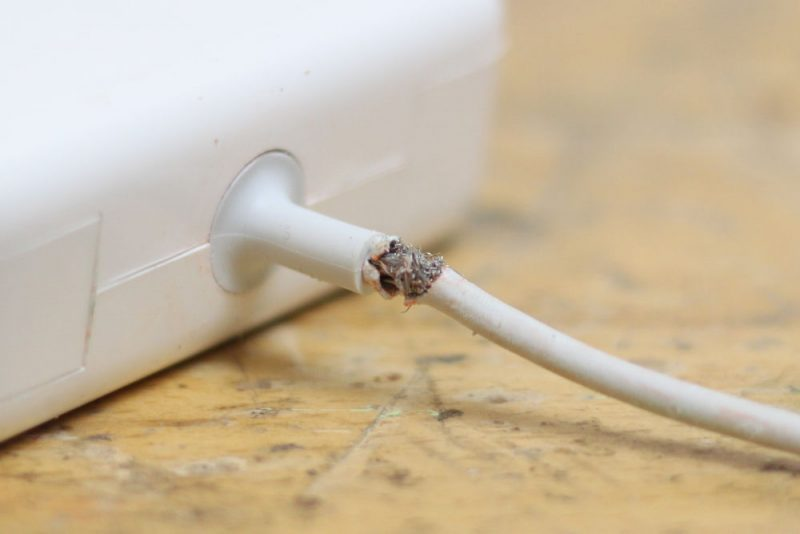
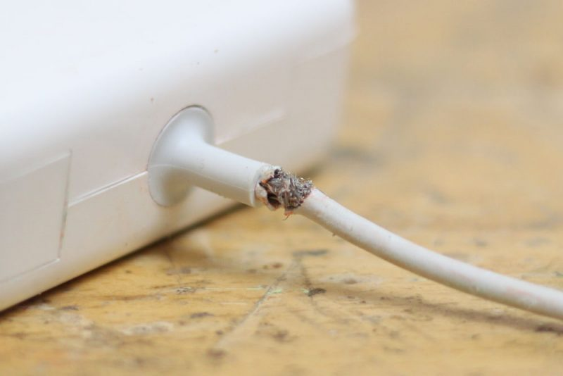

Compresor tornillo rotativo
Serial: 8304585
Marca: Kaeser
Ultimo mantenimiento: 15/05/2025
Preoperacional turno mañana

×
NC
19/05/2025
Juan Carlos Bogotá
El cable se encuentra pelado con evidente desgaste cerca al enchufe.

Juan Carlos Bogotá
El cable se encuentra pelado con evidente desgaste cerca al enchufe.

Preoperacional turno tarde
aqui se pone una imagen
Preoperacional turno noche
aqui se pone una imagen